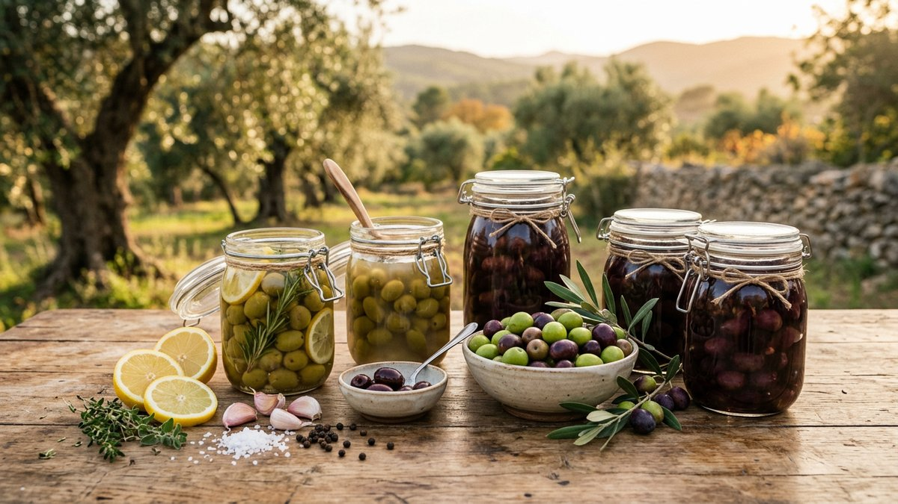

The Olive Grove Project
The Olive Grove ProjectHow to Cure Olives at Home: Safe Brine, Water and Salt Methods (2026)
By Anis Touati · October 9, 2026 · 10 min read
The short answer: a fresh olive is far too bitter to eat, and curing is how you fix that. The safest beginner route is a water cure or a simple brine cure. Both use only water, salt and patience. Lye curing is faster, but it needs real safety gear.
Curing olives is an old Mediterranean habit, and it is the same craft that fills jars on kitchen shelves from Spain to Tunisia. This guide follows the University of California's published home-pickling guidance (Publication 8267), converts the measures to metric, and tells you what to skip if you are new to it.

- Why cure? Fresh olives contain oleuropein, a very bitter compound. Curing leaches it out.
- Fastest safe method for beginners: water cure (cut olives, change the water daily for 8 to 10 days, then a vinegar-salt finish brine).
- Easiest method: brine cure (olives in salt water for 2 to 6 months or more).
- Use pickling salt, not table salt with anti-caking agents, and weigh other salts by grams.
- Never taste or eat olives that look moldy, feel soft or smell bad.
Why you can't eat olives straight from the tree
Olives picked off the tree contain a very bitter compound called oleuropein. Curing removes it. The most common curing processes use brine, dry salt, water or lye, and in each case the water-soluble oleuropein leaches out of the olive flesh. The method you choose changes the flavor and the texture.
- Brine-cured olives ferment, much like pickles and sauerkraut. Natural bacteria on the fruit produce acids that give a distinctive flavor. They tend to be saltier.
- Water-cured olives keep more of their natural taste, but stay slightly bitter.
- Lye-cured olives are the quickest to de-bitter, with a mild, smooth taste. Lye is dangerous if handled badly.
- Dry-salt-cured olives end up soft, wrinkled and a little bitter.
Step 1: Pick and sort the right olives
UC says to use only freshly harvested, unbruised olives. Their guide describes three stages: green-ripe (full size, yellow-green to straw), turning color (rose to red-brown), and naturally black ripe. In California, the first green-ripe olives are ready from mid-September, and naturally black ripe olives from mid-November through December. Your own timing depends on your region and variety, so go by the fruit's color and firmness rather than the calendar.
- Sort by size and color. Similar olives cure at the same speed.
- Throw away bruised or damaged fruit. Bruises show up clearly in the finished olive and can invite mold.
- Process quickly. Fresh olives, especially black ones, should be cured within a few days. For best quality, store them between 5 and 10 °C (41 to 50 °F) in a shallow, ventilated crate.
Step 2: Choose your method
| Method | Best olives | How long | Difficulty | Keeps |
|---|---|---|---|---|
| Water cure, Kalamata-style | Dark ripe, oil-rich | 8–10 days of soaking, then about 1 month in finish brine | Easy | About 1 year, airtight |
| Water cure, cracked green | Green-ripe | 6–7 days of soaking, ready 4 days after finish brine | Easy | Up to 1 year, refrigerated |
| Brine cure, Greek-style black | Dark ripe | At least 2 months, 3 months for milder olives | Easy, needs monitoring | At least 1 year |
| Brine cure, Sicilian-style green | Green-ripe | 4 to 6 months | Easy, needs monitoring | At least 1 year |
| Dry salt cure | Dark ripe, small | 5–6 weeks | Medium | Up to 6 months refrigerated |
| Lye cure | Green-ripe | About 2 weeks | Hard, safety gear needed | 2 months in brine, longer if frozen, dried or pressure-canned |
Source: University of California Agriculture and Natural Resources, Publication 8267, "Olives: Safe Methods for Home Pickling" (Yada and Harris, UC Davis).
Method 1: Water-cured olives (best for beginners)
Water curing needs no special equipment. The olives end up slightly bitter, because water removes less oleuropein than other methods, but they are ready to eat within weeks.
Kalamata-style, step by step
- Use ripe, fully colored fruit (dark red to purplish black), firm, and picked before the first frost. Oil-rich varieties such as Kalamata or Mission work well.
- Rinse and cut. Make two lengthwise cuts on each olive, about 3 mm (1/8 inch) deep.
- Soak in cool water in a food-grade container. Keep the olives under water with a plate or a bag of water on top. Close the lid loosely.
- Change the water every day for 8 to 10 days. For less bitter olives, continue for up to 20 days, but watch them closely. Over-soaking makes olives soft and washed-out.
- Make the finish brine: 1 lb (about 450 g) of pickling salt per gallon (about 3.8 L) of cool water, plus 1 quart (about 1 L) of red wine vinegar. That batch treats about 10 lb (4.5 kg) of olives.
- Cover the drained olives with brine, add a thin layer of olive oil on top, close the lid firmly, and store at about 15 to 27 °C (60 to 80 °F).
- Wait about one month for the flavor to develop. Stored airtight in a cool, dark place or the fridge, they keep for about a year.
Cracked green olives (Mediterranean style)
For green-ripe olives of any variety, crack each one lightly with a mallet or rolling pin. Do not break the pit. Soak and change the water daily for 6 to 7 days. Then cover with finish brine (1 lb of salt per gallon of water plus 2 cups of white wine vinegar). You can add oregano, garlic and lemon slices. Keep them refrigerated. They are ready after 4 days and keep up to a year in the fridge.
Method 2: Brine-cured olives (easiest, but slow)
A brine cure is a natural fermentation. It takes almost no work. It does take at least 3 months and may take 6 months or longer, depending on the fruit, the temperature and the salt level.
Greek-style black olives in brine
- Pack sorted, fully colored olives into jars or food-grade containers that can be made airtight. UC recommends a 1-quart (about 1 L) jar as the smallest size.
- Cover with a medium brine: 8 oz (about 230 g) of pickling salt per gallon of water.
- Close the lids loosely and store at about 15 to 27 °C (60 to 80 °F).
- After 7 days, replace it with strong brine: 1 lb (about 450 g) of salt per gallon of water. Close the lids firmly.
- Leave for at least 2 months. For milder olives, replace the brine with a fresh strong batch once a month for 2 or 3 months.
- Check the jars regularly. If gas makes the lids bulge, loosen them to release it, then close them again. Gas is a normal sign of fermentation.
Sicilian-style green olives in brine
Use green-ripe olives and add seasonings such as fennel, dill or garlic. Mix the brine with 1 cup of salt per gallon of water for large olives such as Sevillano, or 1.5 cups for small ones such as Manzanillo, plus about 2 cups of vinegar per gallon. Store at about 21 °C (70 °F) for roughly 2 months, then keep for another 2 to 4 months until the flavor suits you. Keep the containers full of brine at all times, especially during the first 4 to 5 days of foaming and gas.
Method 3: Dry-salt-cured olives
For fully ripe, dark, small olives. Mix the olives with salt (about 1 lb or 450 g per 2 lb or 900 g of olives), cover with another 1-inch layer of salt, and let them stand at 15 to 27 °C. Re-mix once a week for about a month. They're ready in 5 to 6 weeks. The result is salty, wrinkled and a little bitter. Keep in the fridge for up to 6 months. Let the draining brine fall into a pan or outdoors, since it can stain floors.
Lye curing: know the risks first
Lye (sodium hydroxide) cures green olives in about two weeks, and it is how many commercial and home-style cocktail olives are made. But the University of California is blunt: lye is an extremely corrosive chemical that can cause severe burns, permanent injury or scarring.
- Wear eye protection and intact rubber gloves, plus closed-toed shoes, long pants and long sleeves.
- Always add lye to cold water, never water to lye, and cool the solution to 65–70 °F (18–21 °C) before using it.
- Never use aluminum, tin or galvanized containers.
- Keep it away from children and pets, and plan how you will dispose of it before you start.
If you are a beginner, we suggest starting with a water or brine cure. Lye adds speed, not flavor.
Safety: signs your olives have gone bad
- Mold, soft flesh or a bad smell: do not eat or even taste them.
- Scum on top of brine: remove it and check the brine regularly. Some molds and bacteria produce enzymes that soften olives within about two weeks.
- Home canning: lye-cured olives are low-acid. Only a pressure canner can reach the temperatures needed. Never use a boiling-water bath. Improperly canned olives have caused botulism.
- Freezing and drying: safe ways to keep cured olives longer. Freezing works best for small, oil-rich varieties such as Mission, Kalamata and Picholine.
Troubleshooting
| Problem | Likely cause | Fix |
|---|---|---|
| Olives are still too bitter | Not enough time or water changes | Keep soaking, or replace the brine with a fresh strong batch |
| Olives are mushy | Overripe fruit, over-soaking, or mold in the brine | Use firm olives; skim scum; keep them cool |
| Cloudy brine | Table salt with additives | Use pickling salt next time |
| Bulging lids | Fermentation gas | Loosen, release the gas, close again |
| Too salty | Strong brine | Soak overnight in fresh water before eating |
Serving ideas
Rinse brine-cured olives, soak them overnight if they are very salty, and toss them with olive oil, lemon zest, garlic and oregano. Serve them with bread, white cheese and tomatoes. Chopped olives also add depth to stews, salads and flatbreads.
Want oil instead of table olives? Read when to harvest olives for oil.
From jars of olives to a whole grove
Curing olives at home is the last step of a long chain that starts with a tree, years earlier. On our family's land in Tunisia, we are planting young grafted olive trees so that more people can one day harvest and cure their own. Every tree donated through the project gets a certificate and a public on-chain record.
If this guide made you appreciate the olive a little more, you can plant a tree in the grove for $10. Donations are sent in USDT and appear on a public blockchain ledger, and you can claim a certificate with your name. We're an independent family initiative, not a registered charity. Our transparency page shows how funds can be checked, and you can read why we're planting in Tunisia. Growing your own? See our guide to growing an olive tree in a pot.
Plant an olive tree in Tunisia 🫒
Frequently asked questions
How long does it take to cure olives at home?
It depends on the method. A water cure takes about 6 to 10 days of soaking plus a finish brine, a lye cure about 2 weeks, a dry salt cure 5 to 6 weeks, and a brine cure at least 2 to 3 months, sometimes 6 months or more.
Can I eat olives straight from the tree?
No. Fresh olives contain oleuropein, which is very bitter. They must be cured with water, brine, salt or lye first.
What is the safest way to cure olives at home?
A water cure or a brine cure, because they need only water and salt. Lye curing works, but requires gloves, goggles and careful handling.
What salt should I use for curing olives?
Pickling or canning salt with no additives. Anti-caking agents in table salt cloud the brine. Weigh other salts, and do not use salt substitutes.
How long do home-cured olives last?
Brined and Kalamata-style olives can last about a year if the container stays airtight. Dry-salt-cured olives keep up to 6 months in the fridge. Lye-cured olives keep about 2 months in brine unless you freeze, dry or pressure-can them.
Why do my cured olives taste bitter?
Oleuropein is not fully gone yet. Keep soaking, or refresh the brine. Water-cured olives usually stay slightly bitter by design.
Sources
- Yada S, Harris LJ. "Olives: Safe Methods for Home Pickling," UC ANR Publication 8267, University of California Agriculture and Natural Resources / UC Davis (ucanr.edu).
- UC ANR, "Curing, Preserving and Eating Olives!" (ucanr.edu), curing times and brine instructions.
- UC Davis Center for Fruit and Nut Research and Information, olive curing workshop materials (ccuh.ucdavis.edu): fermentation and lye-safety notes.
- University of California Cooperative Extension, "ABC's of Home-Cured Olives" (ucanr.edu).